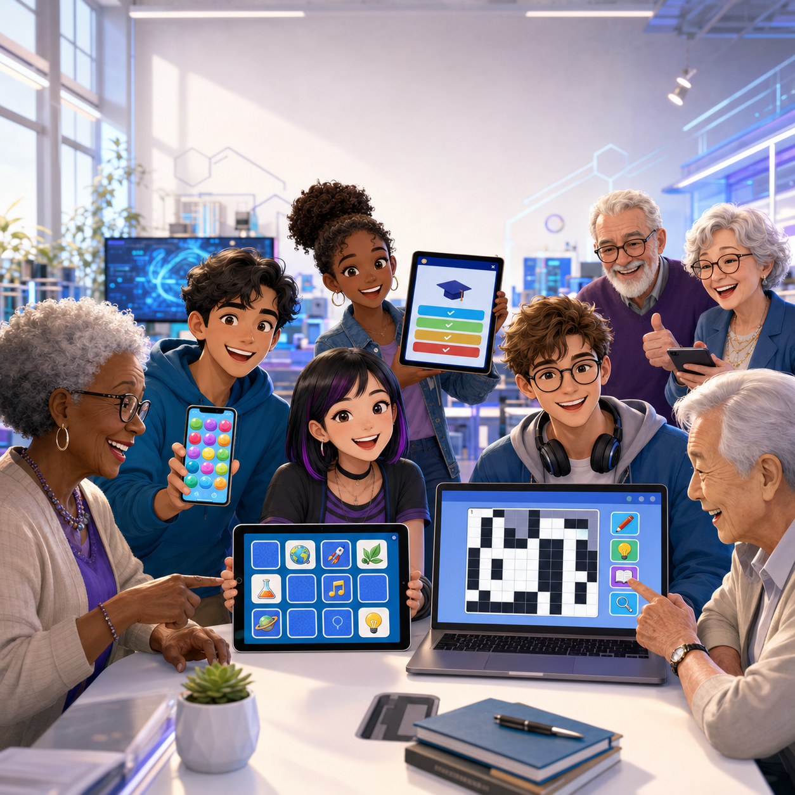
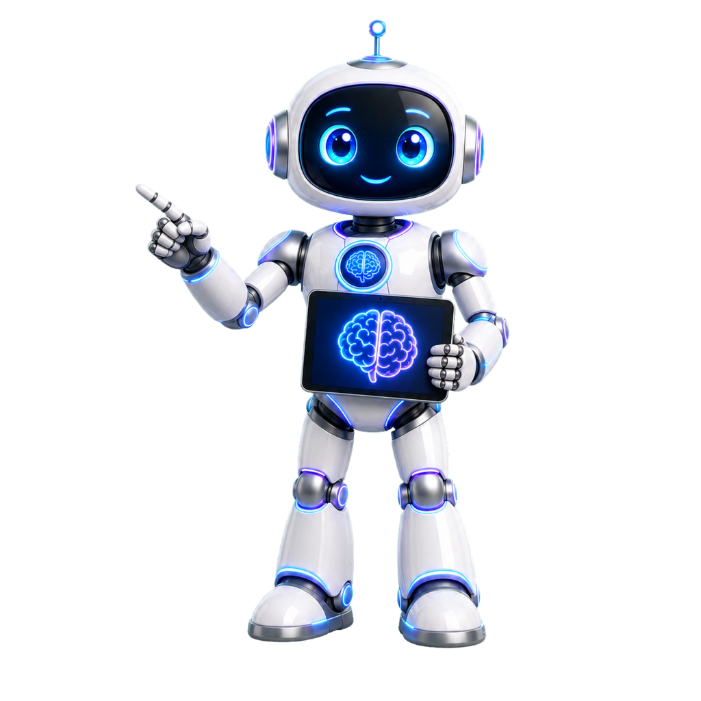

Passo 1 de 7
Abertura da Semana 6
Cada grupo deverá concluir o jogo recebido: memória, sudoku, caça-palavras, quiz, cartas ou Bolha Neuro Shop.

Neuro diz: hoje o objetivo é sair com o jogo funcional, acessível e publicado.
- Confirmar qual jogo o grupo recebeu.
- Revisar tema, regras e conteúdo educativo.
- Dividir responsabilidades.